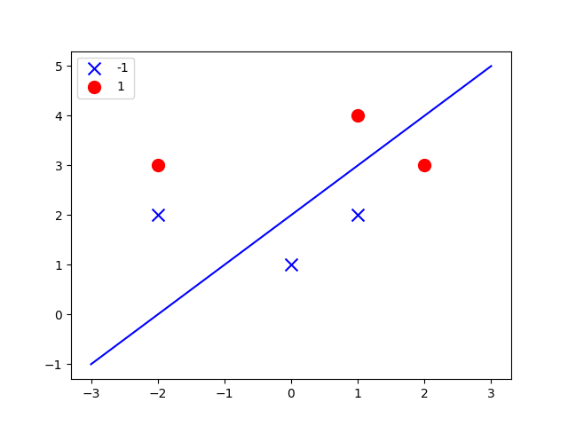
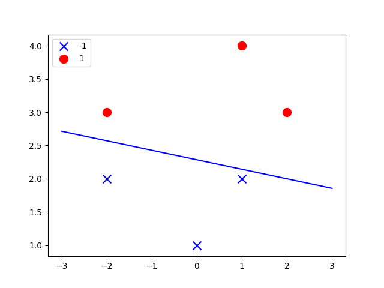
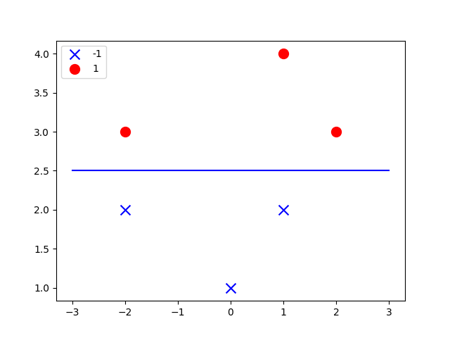

Python 感知器(PLA)实现
Table of Contents
1 PLA回顾
PLA是一种构建于感知器的学习算法。其本质为超平面对线性可分的N维数据集合的线性分割 PLA算法的目的，即通过不断的修正超平面本身法向量，来寻找到当前Training Set下没有任何错误的超平面。 而PLA有两种类型，一种为经典的PLA形式，其表现为超平面法向量的朴素表达。而另外一种，则为PLA的对偶形式，表现为超平面法向量由Traning Set中元素的线性集合 前者在Traning Set维度很大时，效率不如后者来的高。至于原因，不再赘述。
2 PLA – 原始形式
import numpy as np
import matplotlib.pyplot as plt
def create_train_data_set():
train_data_mat = np.array([[1, 1, 4],
[1, 2, 3],
[1, -2, 3],
[1, -2, 2],
[1, 0, 1],
[1, 1, 2]])
train_data_res = np.array([1, 1, 1, -1, -1, -1])
train_data_res = train_data_res[:, np.newaxis]
return train_data_mat, train_data_res
def pla(in_train_mat, in_train_mat_res):
pla_weight = np.ones((3, 1))
while True:
pla_finish = True
for i in range(len(in_train_mat)):
x = in_train_mat[i][:]
y = np.dot(pla_weight.T, x)
if np.sign(y) == np.sign(in_train_mat_res[i]):
continue
else:
pla_finish = False
w_i = x * in_train_mat_res[i]
w_i = w_i[:, np.newaxis]
pla_weight = pla_weight + w_i
if pla_finish:
break
return pla_weight
def plot(point_mat, pla_res):
fig = plt.figure()
ax = fig.add_subplot(111)
xx = list(filter(lambda x: x[3] == -1, point_mat))
ax.scatter([x[1] for x in xx], [x[2] for x in xx], s=100, c='b', marker="x", label='-1')
oo = list(filter(lambda x: x[3] == 1, point_mat))
ax.scatter([x[1] for x in oo], [x[2] for x in oo], s=100, c='r', marker="o", label='1')
x = np.linspace(-3, 3, 50)
#b*pla_res[0] + x*pla_res[1] + y*pla_res[2] = 0
#y = ax+b --> a = - pla_res[1]/pla_res[2] + - pla_res[0]/pra_res[2] pla_res[2]!=0
#pla_res[2]=0 --> x = -pla_res[0]/pla_res[1]b
if pla_res[2]:
a, b = -pla_res[1] / pla_res[2], -pla_res[0] / pla_res[2]
y = a*x+b
ax.plot(x, y, 'b-')
else:
b = -pla_res[0]/pla_res[1]
ax.plot(b * len(x), x, 'b')
plt.legend(loc='upper left', scatterpoints=1)
plt.show()
def main():
train_data_mat, train_mat_res = create_train_data_set()
weight = pla(train_data_mat, train_mat_res)
point_mat = np.hstack((train_data_mat, train_mat_res))
plot(point_mat, weight)
if __name__ == '__main__':
main()
3 PLA – pocket algorithm
正如我们所知，PLA(原始形式)仅可在数据集线性可分的前提下才能work perfectly..然而在现实世界中，
实际上，抛开数据集是否可分不谈，对于一个具有生产价值的系统而言，要如何保证数据集必定线性可分呢？
也许我们会说，我的数据属性决定了，我的数据集合必定是可分的，但不能忽略，现实世界中的数据，往往带有噪音。
如何确保程序在该情形下也可以正常的工作？原始形式，显然是行不通的。
因此，我们提出PLA – pocket algorithm
而pocket algorithm的不同，一言以蔽之，即：有限次数的随机迭代
import random
import numpy as np
import matplotlib.pyplot as plt
# train_data_mat 6*3
train_data_mat = np.array([[1, 1, 4],
[1, 2, 3],
[1, -2, 3],
[1, -2, 2],
[1, 0, 1],
[1, 1, 2]])
# train_data_res_mat 6*1
train_data_res = np.array([[1], [1], [1], [-1], [-1], [-1]])
def cheack(nw):
cnt_nw = 0
for i in range(len(train_data_mat)):
y_nw = np.dot(nw, train_data_mat[i])
if np.sign(y_nw) != np.sign(train_data_res[i]):
cnt_nw = cnt_nw + 1
return cnt_nw
def pla_pocket():
w = np.ones((1, 3))
least_false = cheack(w)
for i in range(0,100000):
de_choice = random.randint(0,5)
de_data = train_data_mat[de_choice]
de_res = train_data_res[de_choice]
y = np.dot(w, de_data)
if np.sign(y) != np.sign(de_res):
n_w = w + de_res * de_data
n_cnt = cheack(n_w)
w = n_w
'''
只要出现错误的点，就一定要更新。不这么做的话，可能会出现w根本无法进行更改的情况。
因为，可能存在这样的w，在任何wrong point上都无法获得比当前更好的结果，则iter停顿。
'''
if n_cnt <= least_false:
least_false = n_cnt
res = n_w
return res
def pla_plot(w):
point_mat = np.hstack((train_data_mat, train_data_res))
fig = plt.figure()
ax = fig.add_subplot(111)
xx = list(filter(lambda x: x[3] == -1, point_mat))
ax.scatter([x[1] for x in xx], [x[2] for x in xx], s=100, c='b', marker="x", label='-1')
oo = list(filter(lambda x: x[3] == 1, point_mat))
ax.scatter([x[1] for x in oo], [x[2] for x in oo], s=100, c='r', marker="o", label='1')
x = np.linspace(-3, 3, 50)
# b*pla_res[0] + x*pla_res[1] + y*pla_res[2] = 0
# y = ax+b --> a = - pla_res[1]/pla_res[2] + - pla_res[0]/pra_res[2] pla_res[2]!=0
# pla_res[2]=0 --> x = -pla_res[0]/pla_res[1]b
if w[2]:
print('w2')
a, b = -w[1] / w[2], -w[0] / w[2]
y = a * x + b
ax.plot(x, y, 'b-')
else:
print('w2nil')
b = (-w[0] / w[1]) * x
ax.plot(b, x, 'b')
plt.legend(loc='upper left', scatterpoints=1)
plt.show()
def main():
w = pla_pocket()
pla_plot(w[0])
if __name__ == '__main__':
main()
附上各种各样的结果图[include the error versions]


